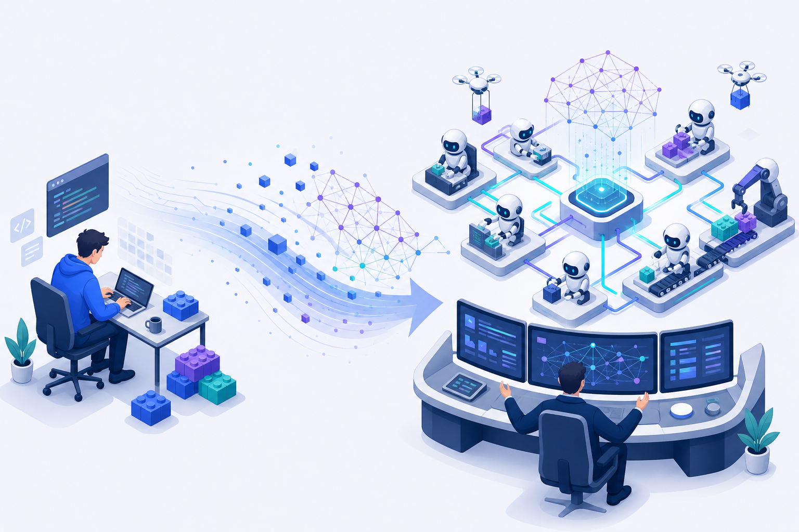

开发模式的改变与展望開発スタイルの変化と展望The Shift & the Outlook
当编码不再是瓶颈，瓶颈转移到「说清楚要什么」和「确认它做对了」。这一章讲清这场转变，以及你该如何站位。コーディングがボトルネックでなくなると、要点は「何が欲しいかを明確にする」と「正しく出来たか確認する」へ移る。本章はこの転換とあなたの立ち位置を扱う。When writing code stops being the bottleneck, the bottleneck moves to "stating what you want" and "confirming it's right." This chapter maps that shift — and where you fit in it.

变迁时间线変遷タイムラインThe Timeline
自动补全オートコンプリートAutocomplete
行内补全提速打字。インライン補完で入力を高速化。Inline completion speeds up typing.
对话辅助対話アシストChat assist
问答、解释、重构建议。Q&A・説明・リファクタ提案。Q&A, explanation, refactor suggestions.
半自治 Agent半自律 AgentSemi-autonomous agents
多步执行：读、改、跑、修。多段実行：読み・直し・実行・修正。Multi-step: read, edit, run, fix.
Agent 编队 / 持久化助手Agent 編隊 / 常駐Agent fleets / persistent
多 agent 协作、跨厂商互操作、长期记忆。マルチ agent 協調・跨ベンダー・長期記憶。Multi-agent collaboration, cross-vendor interop, long-term memory.
对开发生命周期的影响開発ライフサイクルへの影響Impact Across the Lifecycle
| 环节工程Stage | 变化変化What changes |
|---|---|
| 需求要件Requirements | 写「规格」成为核心产物，自然语言即输入。「仕様」が中心成果物に。自然語が入力。The "spec" becomes the core artifact; natural language is the input. |
| 编码実装Coding | 大量代码由 agent 生成，人转向引导与审阅。多くを agent が生成、人は誘導とレビューへ。Much code is agent-generated; humans shift to steering and reviewing. |
| 测试テストTesting | 测试/评测既是验证，也是给 agent 的反馈传感器。テスト/評価は検証であり agent へのフィードバックセンサー。Tests/evals are both verification and a feedback sensor for the agent. |
| 评审レビューReview | 评审量激增——成为新的瓶颈与价值点。レビュー量が急増——新たなボトルネック兼価値。Review volume explodes — the new bottleneck and value center. |
| 运维運用Ops | AgentOps：可观测、评测、治理贯穿全程。AgentOps：可観測・評価・ガバナンスを通貫。AgentOps: observability, evals, governance throughout. |
从 Vibe Coding 到规格驱动开发Vibe Coding から仕様駆動へFrom Vibe Coding to Spec-Driven Development
Karpathy 在 2025 年造了「vibe coding」（凭感觉提示），一年后他自己也说：这个时代正在落幕，进入「agentic engineering」——按详细规格编排 agent + 人监督。Karpathy が 2025 年に「vibe coding」を造語。1 年後に本人が、その時代は終わりつつあり「agentic engineering」（詳細な仕様で agent を編成 + 人の監督）へ入ると述べた。Karpathy coined "vibe coding" in 2025; a year later he said the era is ending, giving way to "agentic engineering" — orchestrating agents against detailed specs with human oversight.
Spec-Driven Development
规格＝主权文档。循环：Spec → Plan → Tasks → Implement。规格是「实现的来源、验证的标准、治理的依据」。仕様＝主権文書。ループ：Spec → Plan → Tasks → Implement。仕様が実装の源・検証基準・統治根拠。The spec is the sovereign document. Loop: Spec → Plan → Tasks → Implement. The spec is the source of implementation, the bar for verification, the basis for governance.
解决两大失效2 つの失敗を解決Fixes two failure modes
Intent drift：「加个登录」严重欠定义，模型挑的默认值常常不对。
Context decay：代码库超出上下文窗口后，agent 遗忘旧决策、自相矛盾。Intent drift：「ログイン追加」は曖昧で既定値がずれる。
Context decay：文脈窓を超えると旧決定を忘れ矛盾する。Intent drift: "add login" is wildly underspecified; defaults rarely match intent.
Context decay: past the context window, the agent forgets old decisions and contradicts itself.
生态（仅类别列举，不推荐特定项目）：GitHub Spec Kit、AWS Kiro、Cursor、OpenSpec、BMAD、Tessl、Google Antigravity… 30+ 框架。エコシステム（種類の列挙、特定推奨ではない）：Spec Kit、Kiro、Cursor、OpenSpec、BMAD、Tessl、Antigravity… 30+。Ecosystem (categories, not endorsements): GitHub Spec Kit, AWS Kiro, Cursor, OpenSpec, BMAD, Tessl, Google Antigravity… 30+ frameworks.
AgentOps：把 agent 运营起来AgentOps：agent を運用するAgentOps: Operating Agents
可观测、评测、治理、版本化贯穿 agent 全生命周期；AG-UI 让「看见 agent 思考」成为前端标配。可観測・評価・ガバナンス・バージョン管理を agent の全生涯に。AG-UI で「思考の可視化」が標準に。Observability, evals, governance, versioning across the agent lifecycle; AG-UI makes "watch the agent think" a frontend default.
👁 可观测可観測Observability
OpenTelemetry · Langfuse · Arize
📊 Evals
全轨迹评测、回归基线。全軌跡評価・回帰基準。Trajectory evals, regression baselines.
🛡 治理ガバナンスGovernance
权限、审批、审计、版本化。権限・承認・監査・版管理。Permissions, approvals, audit, versioning.
Harness 工程：新的工程学科Harness エンジニアリング：新しい工学Harness Engineering: A New Discipline
承接 Part 2：当 agent 产出代码的速度超过人类评审速度，可靠性就来自精心设计的 harness——约束、反馈回路、传感器、护栏、记忆与权限。Part 2 から：agent の生成速度が人のレビュー速度を超えると、信頼性は緻密に設計された harnessから生まれる——制約・フィードバックループ・センサー・ガードレール・記憶・権限。From Part 2: when agents emit code faster than humans can review, reliability comes from a well-designed harness — constraints, feedback loops, sensors, guardrails, memory, permissions.
工程师的重心从「写代码」转向「设计治理 agent 如何写代码的系统」。作用：抑制架构漂移、统一安全/合规、用确定性约束替代概率性合规。由此产生新角色：harness / 平台工程。エンジニアの重心は「コードを書く」から「agent のコード生成を統治するシステムを設計する」へ。効果：アーキ漂移の抑制、安全/コンプラの統一、確率的遵守を決定的制約に置換。新役割：harness / プラットフォーム工学。The engineer's focus shifts from writing code to designing the systems that govern how agents write code. It curbs architecture drift, unifies security/compliance, and replaces probabilistic compliance with deterministic constraints — spawning new roles in harness/platform engineering.
业界论述：Martin Fowler、Thoughtworks、Augment Code 等。業界の議論：Martin Fowler、Thoughtworks、Augment Code 等。Industry writing: Martin Fowler, Thoughtworks, Augment Code, etc.
前瞻：最新工程实践これから：最新の工学実践Emerging Engineering Applications
🛰 Agent 编排平台 / 编队Agent オーケストレーション / 編隊Orchestration / fleets
把多个各自带 harness 的 agent 当单元来调度（编排 ≠ harness）。各自 harness を持つ複数 agent をユニットとして調停（orchestration ≠ harness）。Schedule many agents (each with its own harness) as units — orchestration, a layer above the harness.
🏭 后台自治 agentバックグラウンド自律 agentBackground / "dark factory" agents
在 CI/后台无人值守地跑：修 bug、升依赖、迁移遗留代码。CI/裏で無人実行：バグ修正・依存更新・レガシー移行。Run unattended in CI/background: fix bugs, bump deps, migrate legacy code.
🔎 Agentic retrieval + 混合记忆Agentic retrieval + ハイブリッド記憶Agentic retrieval + hybrid memory
检索/记忆从「向量库」升级为基础设施：向量+图+全文+知识图谱。検索/記憶が「ベクトル DB」から基盤へ：ベクトル+グラフ+全文+知識グラフ。Retrieval/memory graduates from "a vector DB" to infrastructure: vector + graph + full-text + knowledge graph.
📐 规格驱动流水线 + Eval 平台仕様駆動パイプライン + Eval 基盤Spec-driven pipelines + eval platforms
spec → 计划 → 任务 → 实现 接入 CI；eval/harness 平台化、可观测化。spec → 計画 → タスク → 実装 を CI に；eval/harness の基盤化・可観測化。spec → plan → tasks → implement wired into CI; eval/harness as observable platforms.
挑战与机遇課題と機会Challenges & Opportunities
⚠ 挑战課題Challenges
- 质量与幻觉品質とハルシネーションquality & hallucination
- 安全：密钥 / 供应链 / 越权セキュリティ：鍵 / サプライチェーン / 越権security: secrets / supply chain / over-permission
- 评审负担激增レビュー負担の急増review-load explosion
- 技能演变与成本スキル変化とコストskill shift & cost
- 治理与合规ガバナンスとコンプラgovernance & compliance
✦ 机遇機会Opportunities
- 生产力跃升生産性の飛躍productivity leap
- 降低门槛、人人可造障壁低下、誰もが作れるlower barrier, build for all
- 新角色：harness / 平台 / 规格新役割：harness / プラットフォーム / 仕様new roles: harness / platform / spec
- 遗留系统现代化レガシー近代化legacy modernization
- 从执行者到设计者実行者から設計者へfrom doer to designer
行动建议（按经验分层）アクション（経験別）What To Do Next (by level)
🌱 初学者初心者Beginner
每天用 Chat + IDE 补全建立直觉；学会写清楚需求。毎日 Chat + IDE 補完で感覚を作る；要件を明確に書く練習。Use Chat + IDE completion daily to build intuition; practice writing clear requirements.
🚀 进阶者中級者Intermediate
给项目写 rule / skill / hook；试规格驱动；建立 eval。rule / skill / hook を整備；仕様駆動を試す；eval を作る。Add rules/skills/hooks to your repo; try spec-driven; set up evals.
🏗 团队 / Leadチーム / LeadTeam / Lead
投资 harness 与 AgentOps；定治理与权限；规划多 agent 互操作。harness と AgentOps に投資；ガバナンス/権限を定義；マルチ agent 相互運用を計画。Invest in harness & AgentOps; define governance/permissions; plan for multi-agent interop.